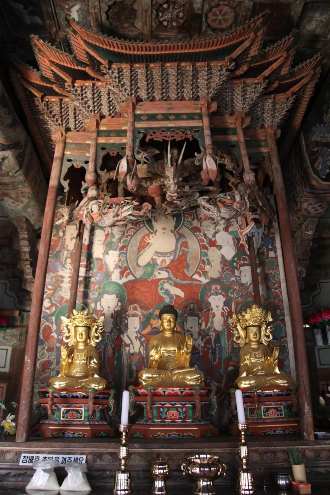
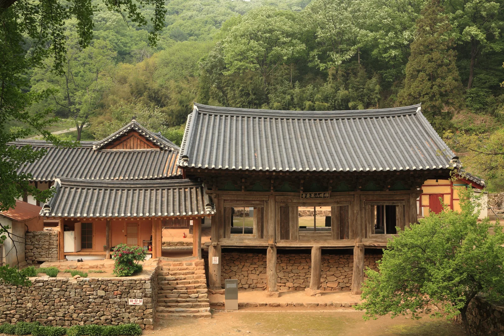
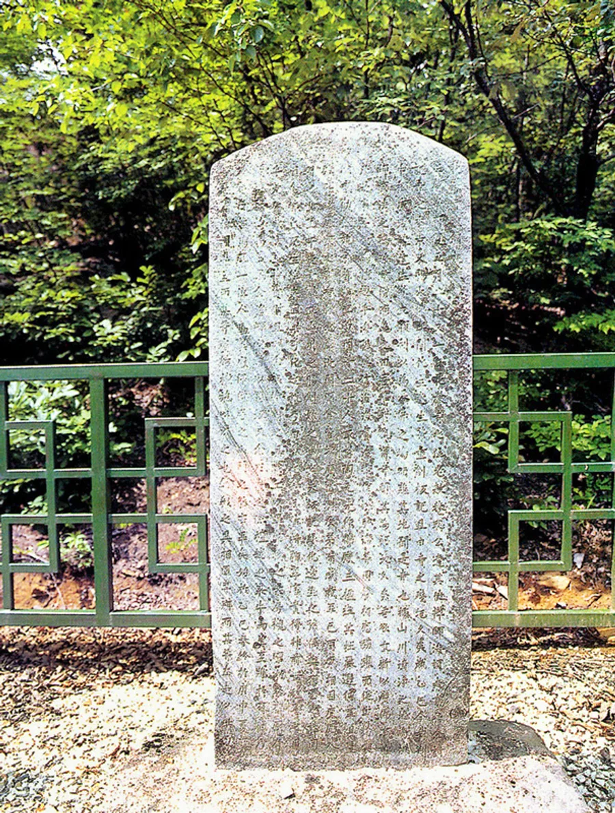
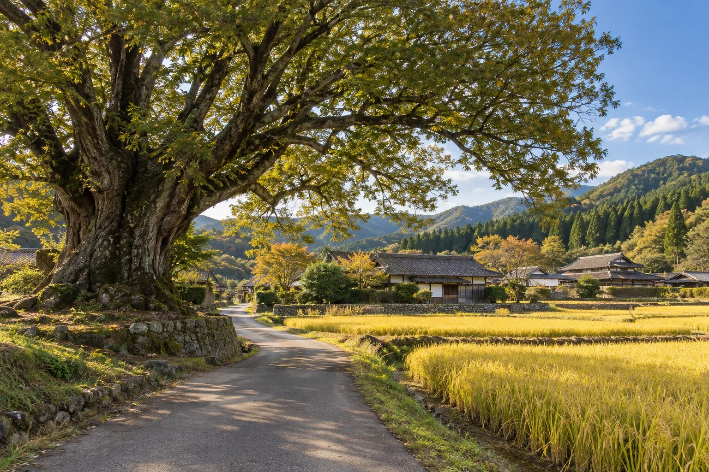
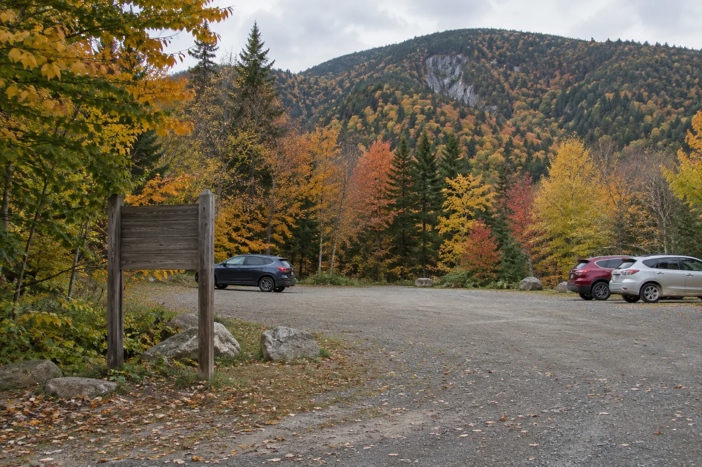
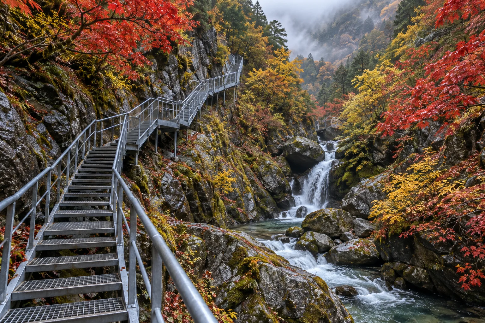
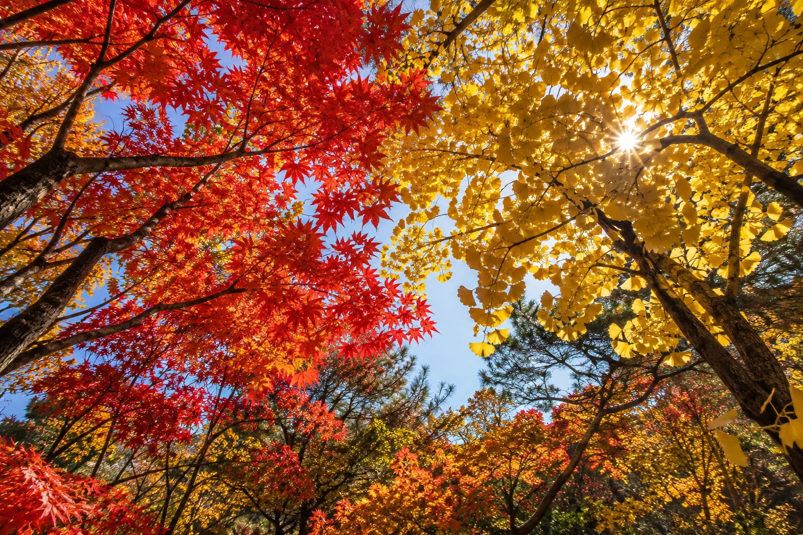
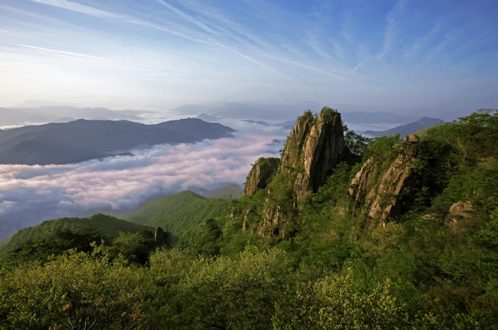
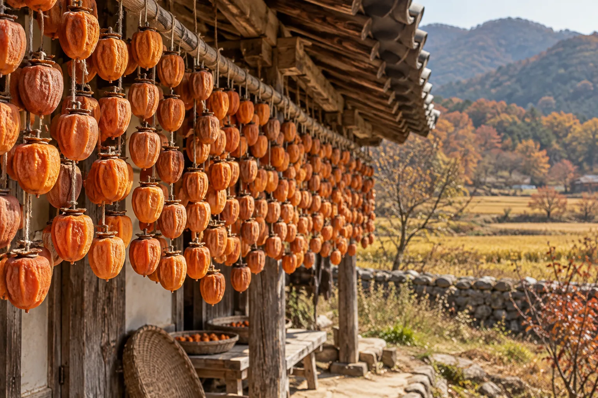
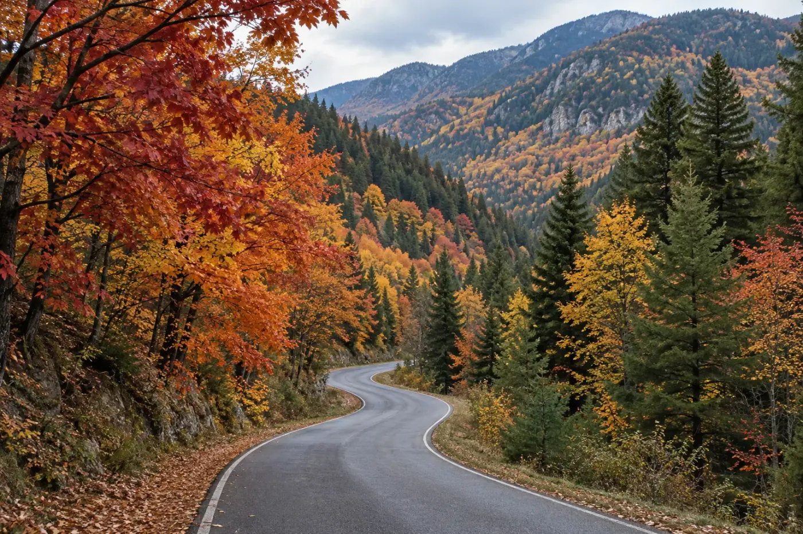

▲ 완주 화암사 극락전. 정면 3칸·측면 3칸에 맞배지붕을 얹은 이 건물은 국내에서 유일하게 남은 하앙식 목조건축으로, 2011년 국보 제316호로 승격 지정됐다 사진=Wikimedia Commons (문화재청, 공공누리 제1유형)
1. 시인이 "내 사랑"이라 부른, 차로는 닿지 않는 절
전북 완주군 경천면 불명산 자락에 있는 화암사는 해발 300m가 채 되지 않는 야산 깊숙한 곳에 있지만, 지금도 승용차로는 절 마당까지 들어갈 수 없는 절이다. 주차장에 차를 세우고 계곡을 따라 난 산길을 걸어야만 경내에 닿는다. 시인 안도현이 시 "화암사, 내 사랑"에서 이 절을 "잘 늙은 절 한 채"라 부르며 널리 알려졌지만, 접근 방식만큼은 시가 쓰이기 훨씬 전이나 지금이나 크게 달라지지 않았다. 본사인 김제 금산사의 말사로, 원효대사와 의상대사가 수도했다는 이야기가 전해질 만큼 오래된 절이지만 규모는 작고 소박하다.
2. 국내 유일 하앙식, 극락전과 우화루
화암사 극락전은 국내에 남아 있는 유일한 하앙식(下昻式) 목조건축이다. 국가유산청에 따르면 하앙식은 처마 무게를 받치는 부재(하앙)를 기둥 밖으로 하나 더 걸어 지렛대 원리로 처마를 일반 구조보다 훨씬 길게 내민 건축 방식으로, 중국·일본에는 남아 있지만 국내에서는 화암사 극락전이 유일한 사례로 꼽힌다. 이 학술적 가치를 인정받아 2011년 11월 28일 보물 제663호에서 국보 제316호로 승격 지정됐다. 정면 3칸, 측면 3칸에 맞배지붕을 얹은 작은 규모지만, 1981년 해체·수리 과정에서 발견된 기록에 따르면 정유재란 때 소실된 뒤 1605년(선조 38년)에 중건된 것으로 확인됐다. 단청을 하지 않은 목재 그대로의 색이 남아 있어 주변 바위·나무와 어우러지는 것도 특징이다.

▲ 극락전 내부의 불단과 지붕 모형 닫집. 기둥 위 공포 구조 안쪽으로 하앙식 부재가 지나며, 불단 위에는 화암사 동종(전북 유형문화유산)도 놓여 있다 사진=Wikimedia Commons (국가유산청, 공공누리 제1유형)
극락전 앞에 있는 우화루는 보물 제662호로, 1980년 6월 11일 지정됐다. 국가유산청 설명에 따르면 현재 건물은 조선 광해군 3년(1611)에 세워진 뒤 여러 차례 수리를 거쳤으며, 앞면에서 보면 2층이지만 뒤쪽 마룻바닥을 땅과 거의 같은 높이로 놓아 안에서 보면 1층집처럼 보이는 독특한 구조다. 화암사 경내 건물들은 단청이 옅거나 아예 없는 소박한 모습이 많고, 휘어진 나무를 다듬지 않고 그대로 살려 짜맞춘 가구 방식도 곳곳에서 눈에 띈다는 평가를 받는다. 국보 극락전과 보물 우화루가 한 마당 안에 나란히 있다는 점이 이 작은 절의 문화재적 무게를 보여준다.

▲ 화암사 경내에서 바라본 우화루. 1611년(광해군 3년) 세워진 이 2층 누각을 지나야 극락전 마당에 닿는다 사진=Seong Ilhan, Wikimedia Commons (CC BY-SA 4.0)
극락전 불단 위에는 화암사 동종도 놓여 있다. 전라북도 유형문화유산으로 지정된 이 범종은 별도의 종각이 아니라 극락전 안에 자리 잡고 있어, 국보와 보물, 도 지정 문화유산이 한 건물 안팎에 함께 있는 셈이다.

▲ 화암사 경내에 남아 있는 옛 중창 관련 비석. 여러 차례의 중건·중수 내력을 새긴 기록물이 절 곳곳에 남아 있다 사진=Wikimedia Commons (국가유산청, 공공누리 제1유형)
3. 주차장에서 절까지, 계곡 철계단을 걸어야 한다
화암사는 지금도 승용차로 경내까지 들어갈 수 없는 절이다. 완주군청이 안내하는 승용차 경로는 전주 방면에서 17번 국도를 타고 봉동~고산~경천을 지나 용복주유소에서 우회전, 구제마을삼거리에서 좌회전해 화암사 방향 도로로 접어드는 코스다. 이 마지막 구간은 폭이 좁은 왕복 1차선에 가까운 농로여서, 마주 오는 차와 교행이 쉽지 않은 구간이 있다. 서행하고, 갓길이 넓어지는 곳에서 미리 비켜서는 여유가 필요하다.

▲ 화암사로 가는 길목의 시골 마을 풍경. 좁은 농로가 이어지다 절 입구 주차장에서 끝난다 이미지=AI 생성
주차장은 화암사길 끝, 등산로 입구에 있는 소규모 공영주차장으로 무료이며 대형버스 기준 약 15대를 수용할 수 있는 규모다. 승용차 기준으로는 이보다 넉넉하지만, 단풍철 주말이나 연휴에는 자리가 금방 들어차므로 오전 일찍 도착하는 편이 안전하다. 주차장 초입에는 "차량 진입 금지" 푯말이 서 있는데, 이 표지판이 화암사로 향하는 사실상 첫 관문이다. 이후로는 완만한 흙길로 이어지다가 계곡을 만나면서 돌길과 철계단 구간으로 바뀌므로, 주차장에 짐을 정리해두고 걷기 편한 신발로 갈아 신는 것이 좋다.

▲ 산기슭의 소규모 주차장 풍경. 화암사 주차장도 이런 규모의 공영 공터로, 이곳부터는 걸어서 이동해야 한다 이미지=AI 생성
4. 흙길-돌길-계곡-철계단, 편도 20~30분
주차장에서 절까지는 흙길과 돌길을 지나 계곡을 건너고, 마지막에는 절벽 사이에 놓인 철제 계단을 올라야 한다. 이 철계단이 11번을 굽이돌며 147계단을 오르면 화암사의 정문 격인 우화루에 닿는다. 도보 소요시간은 대한민국 구석구석·오마이뉴스 등 여러 방문기에서 공통적으로 편도 약 20분 안팎으로 소개되며, 계곡물 흐르는 소리를 들으며 걷는 구간이라 여름에는 서늘하고 가을에는 단풍이 계곡을 따라 물든다. 철계단 구간은 경사가 있고 바닥이 철제 발판이라 비 온 뒤에는 미끄러울 수 있어 운동화 등 미끄럼 방지가 되는 신발을 신는 것이 좋다.

▲ 협곡을 따라 굽이도는 철제 계단의 분위기. 화암사 진입로도 계곡 옆 절벽에 놓인 철계단을 여러 차례 꺾어 오르는 구조다 이미지=AI 생성
계절에 따라 다양한 야생화도 볼 수 있는 구간으로 알려져 있다. 다만 산속 절이라 해가 일찍 지므로, 동절기에는 오후 5시, 하절기에는 오후 5시 30분이면 절 대문이 닫힌다. 하산 시간을 고려해 오후 방문은 여유 있게 계획하는 것이 좋고, 정확한 개방시간은 방문 전 화암사(063-261-7576)로 확인하는 것을 권장한다.
5. 계곡 따라 물드는 가을, 단풍 시기는 매년 조금씩 다르다
화암사로 가는 길과 경내는 계곡을 낀 활엽수림이라 가을이면 단풍이 계곡물과 어우러진다. 화암사 자체의 절정 시기를 공식적으로 발표한 자료는 확인되지 않지만, 참고할 만한 인근 기준으로 산림청이 발표한 2025년 단풍 예측에서는 완주 대아수목원의 은행나무가 10월 27일, 참나무가 10월 29일, 단풍나무가 10월 30일 무렵 절정에 이를 것으로 전망된 바 있다. 화암사는 해발이 낮고 계곡 그늘이 있어 이보다 다소 늦게, 11월 초까지 단풍이 이어지는 경우가 많다. 정확한 절정 시기는 그해 기온에 따라 달라지므로 방문 전 완주군청이나 산림청의 단풍 예보를 확인하는 것이 좋다.

▲ 붉은 단풍과 노란 은행잎이 뒤섞인 늦가을 숲의 모습. 화암사 계곡길도 이 무렵 절정을 이룬다 이미지=AI 생성
📍 방문 전 확인할 것
화암사 진입로 마지막 구간은 폭이 좁은 1차선 농로다. 교행이 어려운 구간이 있으니 서행하고, 단풍철 주말에는 주차장이 붐빌 수 있어 오전 일찍 도착하는 것이 좋다. 절 대문은 계절별로 오후 5~5시 30분에 닫히므로 하산 시간을 여유 있게 잡아야 한다.
6. 대둔산과 완주곶감까지 묶는 하루 코스
화암사에서 차로 이동하면 전북과 충남에 걸친 대둔산도립공원과도 멀지 않다. 케이블카로 오르는 상부역사와 국내 최초 산악 현수교인 금강구름다리, 경사 51도의 삼선계단까지 이어지는 코스로, 화암사의 조용한 산사 분위기와는 다른 스릴 넘치는 풍경을 볼 수 있어 하루 코스로 묶기에 좋다.

▲ 운해에 잠긴 대둔산 능선. 화암사에서 차로 이동 가능한 거리에 있어 함께 둘러보는 코스로 꼽힌다 ⓒ 완주군청
완주군 경천면·운주면·동상면 일대는 일교차가 커 곶감 생산지로도 유명하다. 완주 9품 가운데 1품으로 꼽히는 완주곶감은 한로를 전후해 수확한 감을 약 50일간 자연 건조해 만드는데, 떫은맛이 사라지고 부드러운 식감이 특징이다. 매년 초겨울 운주면 일원에서 완주곶감축제도 열린다. 화암사가 있는 경천면 역시 곶감 산지에 포함돼 있어, 가을 산사 나들이길에 곶감을 함께 살펴보기 좋다.

▲ 처마 밑에 매달아 말리는 곶감의 모습. 화암사가 있는 완주 경천·운주·동상면 일대는 곶감 산지로도 알려져 있다 이미지=AI 생성
7. 하루 코스로 정리하면
오전에는 전주 방면에서 17번 국도를 타고 경천을 지나 화암사 주차장에 도착해, 계곡을 낀 산길과 철계단을 걸어 국보 극락전과 보물 우화루를 둘러본다. 왕복 도보에 40분 안팎, 경내를 둘러보는 시간까지 합치면 1시간에서 1시간 반이면 넉넉하다. 오후에는 차로 이동해 대둔산도립공원의 케이블카와 금강구름다리를 즐기거나, 경천·운주면 일대에서 완주곶감을 살펴보는 코스로 하루를 마무리할 수 있다.

▲ 단풍철 산길 도로의 분위기. 화암사 진입로도 이렇게 숲 사이를 굽이도는 좁은 길이 이어진다 이미지=AI 생성
✅ 출발 전 확인할 것
· 화암사 진입로 마지막 구간은 좁은 1차선 농로, 교행 시 서행 필수
· 주차장부터는 도보 전용(편도 약 20분 안팎), 철계단 구간은 미끄럼 방지 신발 권장
· 절 대문은 오후 5~5시 30분(계절별) 폐문, 하산 시간 여유 있게 계획
· 단풍 절정 시기는 매년 달라지므로 방문 전 산림청·완주군청 단풍 예보 확인